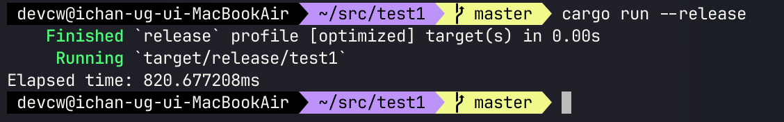
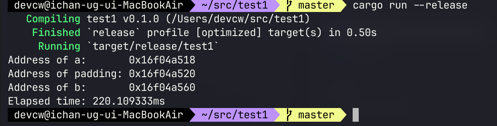

거짓 공유는 동시성 프로그래밍을 하다보면 가끔 볼 수 있는 캐시 일관성 프로토콜과 관련된 문제다.
CPU가 연산을 하려면 캐시라인을 메모리에서 들고 와야한다. 연산 시 캐시를 활용하기 때문이다.
근데 캐시를 태울 때 단일 메모리 주소만 들고오면 캐시 미스가 매우 많이 발생한다 (구조체의 필드마다 매번 캐시를 태운다면..). 그래서 보통 메모리에서 벌크로 (보통 64바이트) 들고오는 편이다.
캐시 일관성 프로토콜
캐시 일관성 프로토콜은 여러 스레드가 본인이 사용하고 있는 코어에서 공유되고 있는 변수를 동기화하는 방법론적인 프로토콜이다.
현대 CPU들은 캐시 일관성 프로토콜로 MESI 프로토콜을 사용하는데, MESI는 각 캐시라인의 상태를 표현하는데 사용된다.
약자인데, 다음과 같은 뜻을 가진다:
| 상태 | 명칭 | 데이터 일치 여부 | 핵심 요약 |
|---|---|---|---|
| M | Modified | 메모리와 다름 | 해당 코어만 수정된 최신본 보유, 메모리 업데이트 필요. |
| E | Exclusive | 메모리와 같음 | 해당 코어만 보유. 수정 시 즉시 M 상태로 전환 가능. |
| S | Shared | 메모리와 같음 | 여러 코어가 공유 중. 수정 시 타 코어에 I 상태 전파 |
| I | Invalid | 사용 불가 | 타 코어의 수정으로 데이터 오염됨. 재사용 시 메모리에서 다시 읽기 필요. |
위와 같은 규약을 정의한 게 바로 MESI 프로토콜이다. 세부적인 구현 차이는 있다. 인텔은 저기다가 Forward인가 하는 상태를 끼워넣었고, AMD는 Owned인가 하는 상태를 넣어뒀다.
당연히 각 코어별로 통신하는 방식은 버스를 통해 통신한다. 그래서 해당 버스의 트래픽을 줄이는 게 요건이다.
거짓 공유 (False Sharing)
어쨌든, 본론으로 돌아와서 거짓 공유는 바로 저 캐시 일관성 프로토콜 때문에 발생한다.
예를 들어보자.
use std::sync::atomic::{AtomicUsize, Ordering};
use std::thread;
use std::time::Instant;
fn main() {
let a = AtomicUsize::new(0);
let b = AtomicUsize::new(0);
let loop_count = 100_000_000usize;
let start = Instant::now();
thread::scope(|s| {
s.spawn(|| {
for _ in 0..loop_count {
a.fetch_add(1, Ordering::Relaxed);
}
});
s.spawn(|| {
for _ in 0..loop_count {
b.fetch_add(1, Ordering::Relaxed);
}
});
});
println!("Elapsed time: {:?}", start.elapsed());
}
std::thread::scope는spawn이랑 다르게 해당 블록이 끝나기 전에 모두 종료되는 게 보장된다. 즉, 스택 메모리 참조가 허용된다.
위 코드를 실행해보면 다음과 같은 결과가 나온다.

Atomic 연산이 아무리 느리다고 해도 0.8초면 매우 느린 결과다. 만약 캐시라인을 다르게 태우려고 중간에 패딩을 넣는다면 어떻게 될까?
use std::sync::atomic::{AtomicUsize, Ordering};
use std::thread;
use std::time::Instant;
#[derive(Debug)]
struct Foo {
_f: [u8;64]
}
fn main() {
let a = AtomicUsize::new(0);
let padding = Foo { _f: [1;64] };
let b = AtomicUsize::new(0);
let loop_count = 100_000_000usize;
let start = Instant::now();
thread::scope(|s| {
s.spawn(|| {
for _ in 0..loop_count {
a.fetch_add(1, Ordering::Relaxed);
}
});
s.spawn(|| {
for _ in 0..loop_count {
b.fetch_add(1, Ordering::Relaxed);
}
});
});
// 각 스택 주소 시작점을 알아보기
println!("Address of a: {:p}", &a);
println!("Address of padding: {:p}", &padding._f);
println!("Address of b: {:p}", &b);
println!("Elapsed time: {:?}", start.elapsed());
}
결과는 다음과 같다.

4배 가까이 줄어든 게 관측된다. 두 변수가 다른 캐시라인을 탄 것이다. 추가 출력을 넣어뒀는데 변수 a와 b의 차이는 0x88이다.
또한, 캐시라인은 캡처된 변수의 시작점부터 태우는 게 아닌 64바이트 기준으로 쭉 깔려있기 때문에 운이 좋으면 캐시라인이 달라질 수 있다!
이게 무슨 말이냐면, 예를 들어서
- Cache Line 0: 0x00 ~ 0x3F (0 ~ 63)
- Cache Line 1: 0x40 ~ 0x7F (64 ~ 127)
- Cache Line 2: 0x80 ~ 0xBF (128 ~ 191)
이런식으로 캐시라인이 있다고 하자. 근데 만약에 a가 0x38(1번 캐시라인 끝자락), 변수 b가 0x40(2번 캐시라인 시작점)에 있다고 가정한다면 변수 a와 변수 b의 물리적 거리는 8바이트 차이가 나지만 하드웨어적으로 캐시라인이 달라서 각 스레드에서 아무리 치고 박고 해도 서로에게 영향이 가지 않는다.
해결
보통 저런식으로 스택 메모리에서 마주하긴 힘들다. 대부분 구조체에서 거짓 공유를 마주하게 될텐데, 뭐 원리는 동일하다. 인접한 변수 두개가 서로 다른 코어에 들어가면 성능 저하가 일어날 수도 있다.
그래서 Rust같은 경우는 repr (메모리 레이아웃 커스텀) 매크로에 align 옵션을 제공해준다.
#[repr(align(64))]
struct Foo {
a: i32,
b; i32
}
이러면 각 필드들 사이에 64바이트 패딩이 생긴다.
Go는 어떨까. Go는 철학이 무식해서 그런거 제공 안해준다. 그래서 사용자가 직접 넣어줘야 한다.
이런식으로..
type Foo struct {
a uint64
_ [64]byte
b uint64
}
근데 Go 진영에서도 하드코드하는 건 좀 아니라고 생각했는지 패키지를 제공해주긴 한다.
import (
"sync/atomic"
"golang.org/x/sys/cpu"
)
type Bar struct {
a uint64
_ cpu.CacheLinePad
b uint64
}
이러면 아키텍처에 맞는 캐시라인 패딩을 알아서 넣어준다.
참조
- https://ko.wikipedia.org/wiki/%EA%B1%B0%EC%A7%93_%EA%B3%B5%EC%9C%A0
- https://dev.to/kelvinfloresta/false-sharing-in-go-the-hidden-enemy-in-your-concurrency-37ni